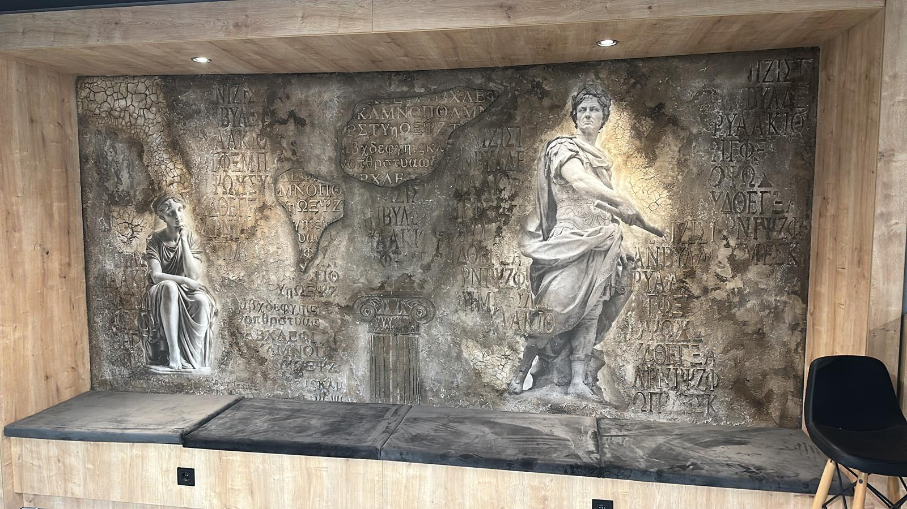
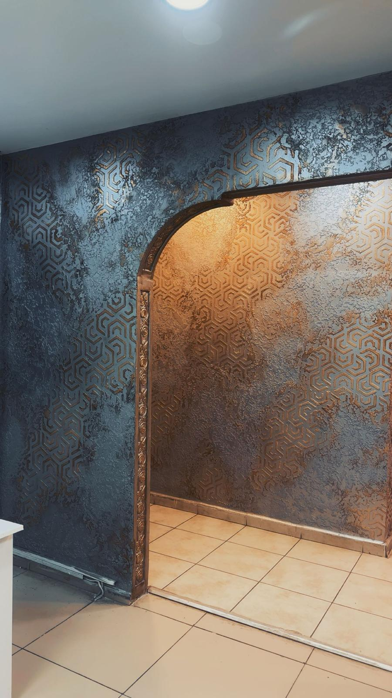
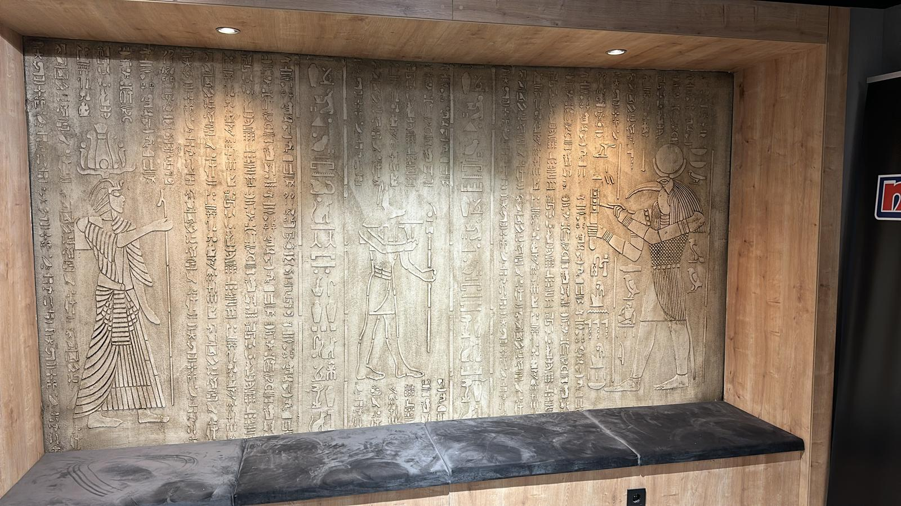
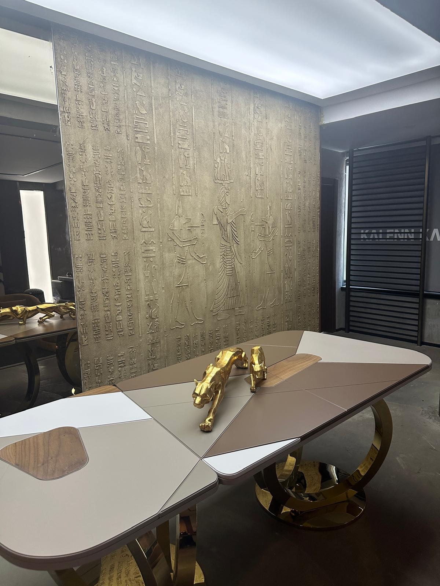
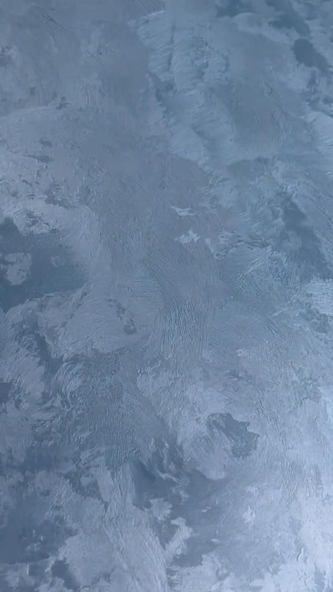
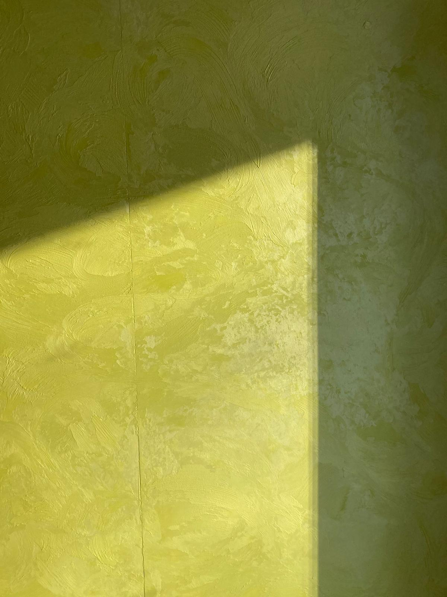
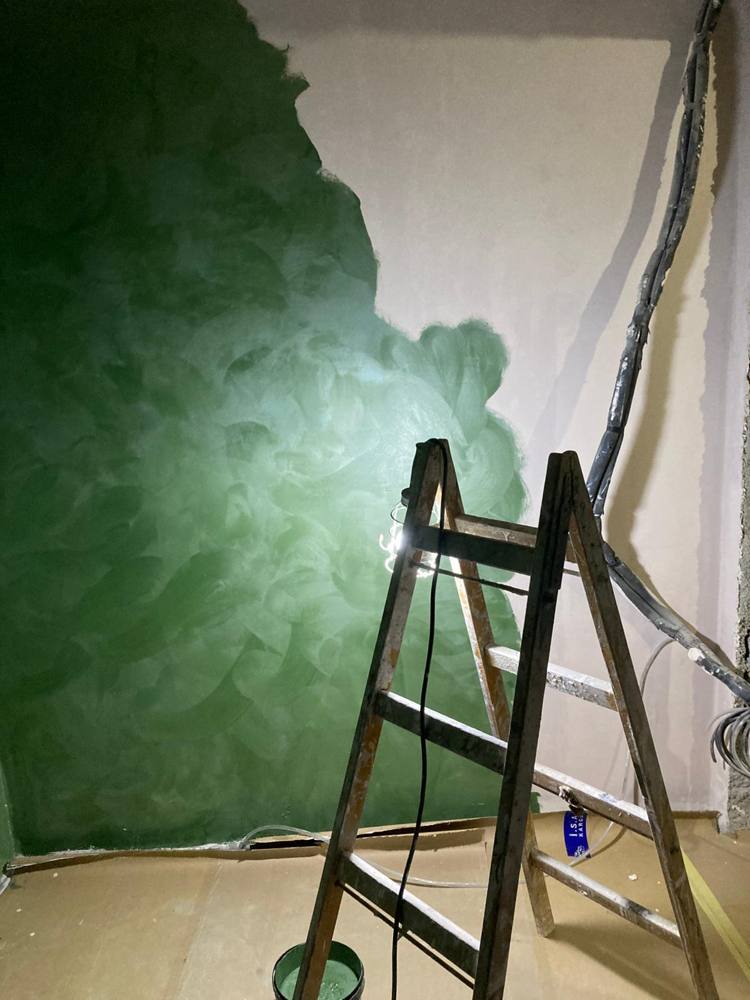
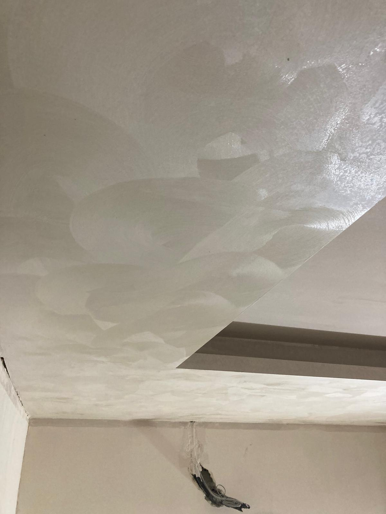

Premium dekoratif
Kadife Boya
Saten dokulu, ışığa göre ton değiştiren, hem modern hem de zarif bir yüzey efekti. Özellikle salon, otel lobisi, kafe ve ofis projelerinde tercih edilir.
Kadife Boya & Üç Boyutlu Sıva
Meddizayne; konut, ofis ve ticari mekânlarda premium dekoratif boya uygulamaları sunar. Profesyonel ekip, temiz işçilik ve uzun ömürlü sonuçlarla mekânlarınıza karakter katıyoruz.
Yüzey hazırlığından son kat uygulamaya kadar tüm aşamaları standartlaştırılmış profesyonel ekiplerle gerçekleştiriyoruz.
Saten dokulu, ışığa göre ton değiştiren, hem modern hem de zarif bir yüzey efekti. Özellikle salon, otel lobisi, kafe ve ofis projelerinde tercih edilir.
Mermer, beton, oksit efektleri ve daha fazlası. Mekânınıza göre seçilmiş doku ve renk kombinasyonlarıyla benzersiz yüzeyler oluşturuyoruz.
Klasik iç cephe boyama, alçı-tamirat, tavan onarımı ve benzeri tüm boya dekorasyon işlerini de anahtar teslim üstleniyoruz.
Gerçek projelerden seçtiğimiz bazı Kadife Boya ve üç boyutlu sıva uygulamalarımız.







